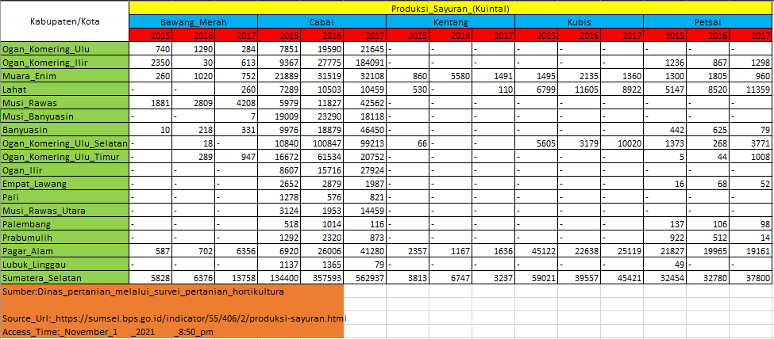
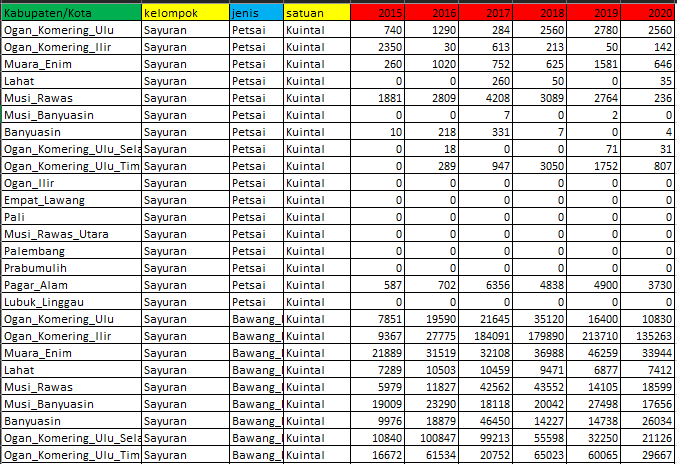

Pemanfaatan Python Pandas dalam Mengekstrak Data BPS
Latar Belakang
Pengenalan BPS
Badan Pusat Statistik (BPS) merupakan Lembaga Non Pemerintahan yang bertanggung jawab langsung kepada Presiden. Landasan hukum badan ini tertuang pada UU Nomor 16 Tahun 1997 tentang Statistik. Merujuk pada undang-undang tersebut, salah satu peran BPS adalah menyediakan kebutuhan data bagi pemerintah dan masyrakat yang didapatkan melalui sensus oleh pihak internal maupun ekternal.
Data BPS
Data BPS memiliki cakupan yang luas mulai dari ruang lingkup Sosial dan Kependudukan, Ekonomi dan Perdagangan hingga Pertanian dan Pertambangan. Masing-masing kelompok data tersebut mimiliki pembagian yang lebih detail. Salah satu jenis data yang tersedia adalah jumlah produksi komoditas suatu daerah berdasarkan rentang tahun yang tersedia. Pada data tersebut dilengkapi detail terkait jenis komoditas. Gambar di bawah ini merupakan contoh data BPS yang berisi jumlah produksi sayuran di Kabupaten Sumatera Selatan tahun 2015 - 2017.

Permasalahan
Setiap data yang disediakan oleh BPS memiliki format baku. Pada contoh data di atas, secara umum terdapat beberapa informasi penting, di antaranya adalah:
- Judul tabel disertai kelompok dan satuan data
- Jenis data
- Rentang tahun
- Wilayah
- Footer
Salah satu permasalahan dari bentuk data BPS ini adalah terpisahnya kelompok data yang sama berdasarkan rentang tahun yang tersedia. Hal ini menjadikan kompilasi data yang sama menjadi cukup sulit dan memakan waktu, terutama dengan jumlah data yang banyak. Format dari data tersebut mengikuti bentuk wide table, dimana tidak terdapat pengulangan pada baris data.
Solusi
Untuk keperluan kompilasi, data sebaiknya dibentuk dalam format long table, di mana terdapat pengulangan pada barisnya. Gambar di bawah ini menampilkan data BPS dalam bentuk long table.

Metode Ektraksi
Program khusus diperlukan untuk mengkonversi data tersebut dari bentuk mentah menjadi format yang diinginkan. Bahasa Python digunakan pada project ini untuk membuat program tersebut.